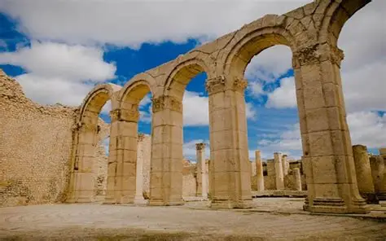

Site archéologique de Makthar
Ancienne cité numide puis romaine, Makthar (Mactaris) est l'un des sites archéologiques majeurs de Tunisie. Ses vestiges exceptionnels comprennent un arc de triomphe, des thermes, un amphithéâtre, des basiliques paléochrétiennes et le célèbre forum avec ses colonnes imposantes.